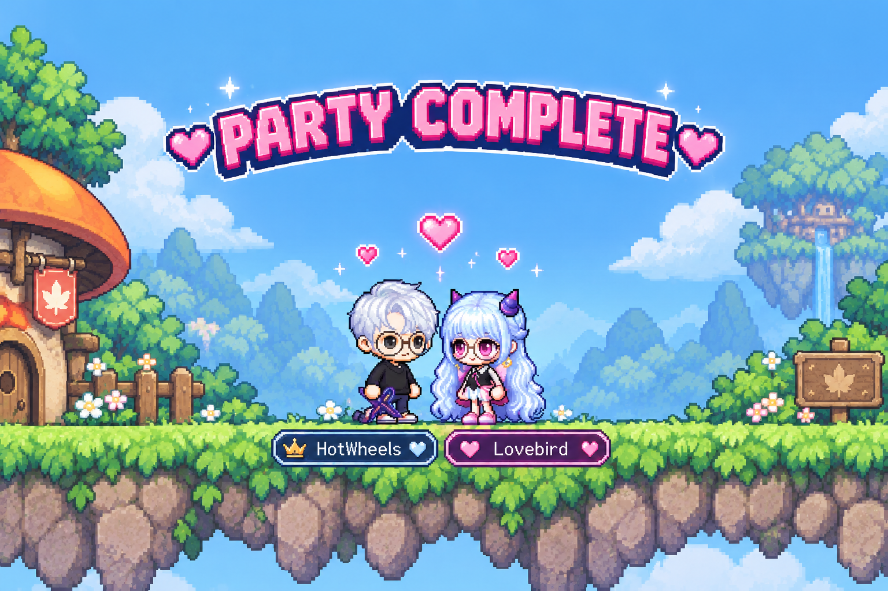
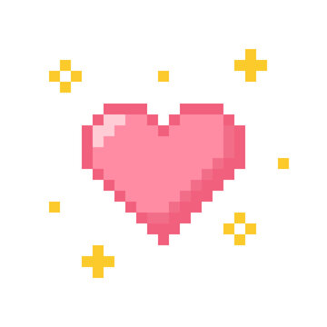

PLAYER 1 READY // BIRTHDAY EDITION
LOADING BIRTHDAY BOY...
♥ BIRTHDAY QUEST ♥
PLAYER PROFILE // PLAYER 1
HOTWHEELS
ALPHASAUR
He can calculate six moves ahead on a chessboard, but somehow missed the line where Lovebird captures HotWheels. ♥
MAPLESTORY // CO-OP PARTY
LOVEBIRD + HOTWHEELS

How did a lovebird manage to catch a car?? Get good >:3
CO-OP DATABASE // UNLOCKED
SELECT A GAME ♥
Games, anime, Discord calls, or just chilling together. Somehow, it's always a good time.
STORY MODE // HEART METER
THE HOTWHEELS CHRONICLES
EACH HEART UNLOCKS ANOTHER CHAPTER.
FINAL LEVEL // PLAYER 1

HAPPY BIRTHDAY, WILLIAM
William,
It's kind of strange how quickly someone can go from being a person you've only caught glimpses of to someone whose name you're genuinely excited to see pop up on your screen.
I've really loved getting to know you these past few months. I love our gaming nights and anime nights, but I think some of my favorite moments are honestly the ordinary ones. When we're sitting in Discord talking about nothing important, laughing at something stupid, or just quietly keeping each other company while we do our own things. I really love how easy it feels to spend time with you.
The more I've gotten to know you, the more I've come to admire the kind of person you are, too. I love how much you care about your friends and the people around you, and how naturally you seem to want to help and do right by them. You're incredibly capable, but you're also kind, thoughtful, and someone people can depend on. I really admire that about you. I think you make the lives of the people around you a little better just by being the person you are, and I'm really happy that I get to be one of those people now.
I know we've only been together for a short time, and there's still so much for us to learn about each other. But I think that's part of what makes me so excited. There are still so many games to play, places to go, late-night conversations to have, and little things about each other that we haven't discovered yet.
Meeting you in person made me even more excited for all of it, and I can't wait to see you again in October and make more memories together.
I'm really glad our paths crossed, William. And despite your best efforts, I'm very glad HotWheels wasn't quite fast enough to get away. ♥
Happy Birthday, William. I'm really, really glad you're here.
♥ Sparrow
QUEST COMPLETE
MORE ADVENTURES LOADING...